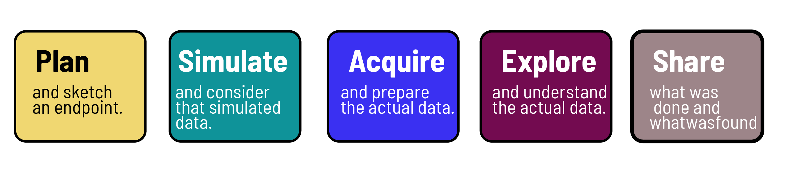

Are you interested in diving into the world of coding and programming using R and Python? If so, you’ve come to the right place. This website will guide you through the essentials of data science, focusing on how to turn raw data into valuable information to support decision making in both business and science.

As often taught, we begin with the basics - an introduction to programming. Whether you’re new to coding or have some experience, understanding the fundamentals of programming is crucial. We’ll cover key concepts and terminology to help you get started on the right foot.
Next, we’ll walk you through the process of installing R and RStudio. These are essential tools for anyone working with R, as they provide a user-friendly interface and a wide range of features to enhance your coding experience.
Once you have R and RStudio up and running, it’s time to get familiar with the environment. We’ll explore the layout and functionality of R and RStudio, helping you feel comfortable navigating and using these tools effectively.
Data types in R are an important aspect of programming in R. Understanding different data types such as numeric, character, and logical is essential for data manipulation and analysis. We’ll break down each data type and provide examples to ensure you have a solid grasp of this concept.
Data structure in R is another crucial topic to master. From vectors to matrices to lists, we’ll cover the various data structures in R and explain how each one is used in data science applications.
Tidying data frames is a key step in data analysis. We’ll delve into the principles of tidy data and demonstrate how to clean and organize your data frames for optimal analysis and visualization.
Data visualization with ggplot2 is an exciting aspect of data science. This powerful package in R allows you to create stunning visualizations to gain insights from your data. We’ll guide you through the process of using ggplot2 to create compelling graphs and charts.
Data manipulation is a vital skill for any data scientist. We’ll explore techniques for filtering, sorting, and transforming data to extract the information you need for your analysis.
Statistics play a significant role in data science, enabling you to draw meaningful conclusions from your data. We’ll cover essential statistical concepts and techniques to help you make sense of your findings.
Modeling is the process of building and evaluating models to make predictions or gain a deeper understanding of your data. We’ll introduce key modeling techniques and demonstrate how to apply them in R for various scenarios.
Quarto for report writing is a valuable tool for creating dynamic and reproducible reports. We’ll show you how to use Quarto to generate professional reports that capture your data analysis process and findings.
Git and GitHub are essential for version control and collaboration in coding projects. We’ll provide an overview of these tools and explain how they can streamline your coding workflow and facilitate teamwork.
Finally, we’ll discuss the importance of blogs and websites in showcasing your work as a data scientist. Building an online presence through blogging and creating a personal website can help you share your insights and connect with others in the field.
By covering these nine major topics, we aim to equip you with the foundational knowledge and practical skills needed to excel in data science using R and Python. Whether you’re just starting or looking to expand your expertise, this blog post will serve as a valuable resource on your journey in the world of programming and data science.
Back to top